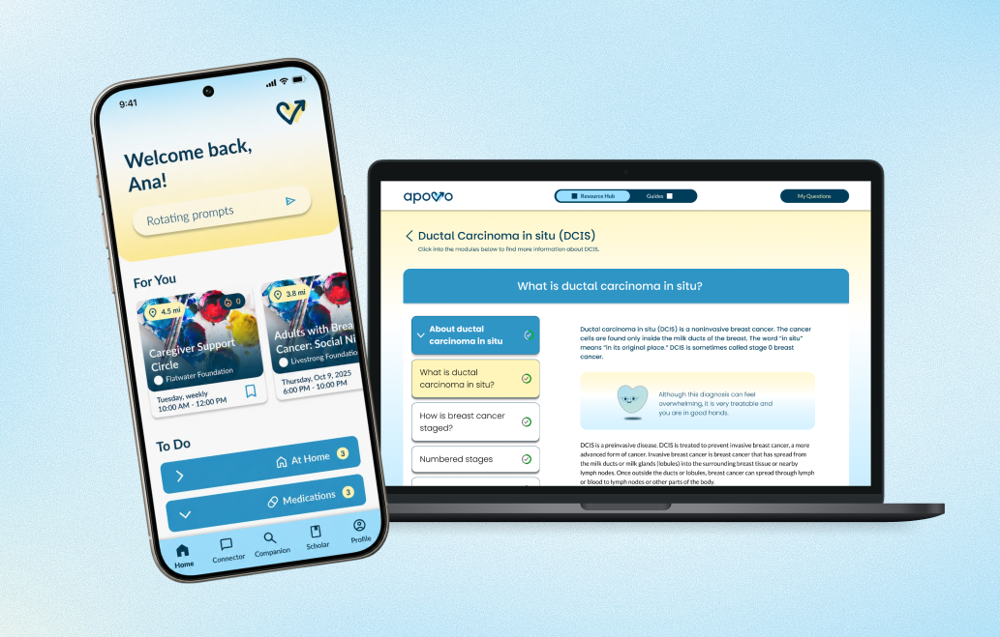
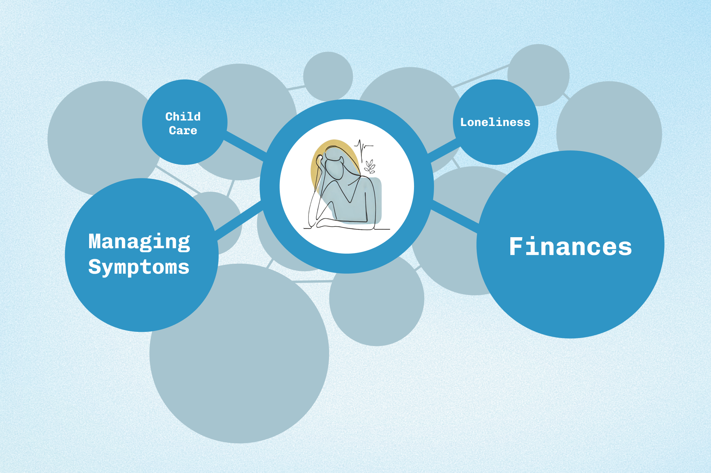
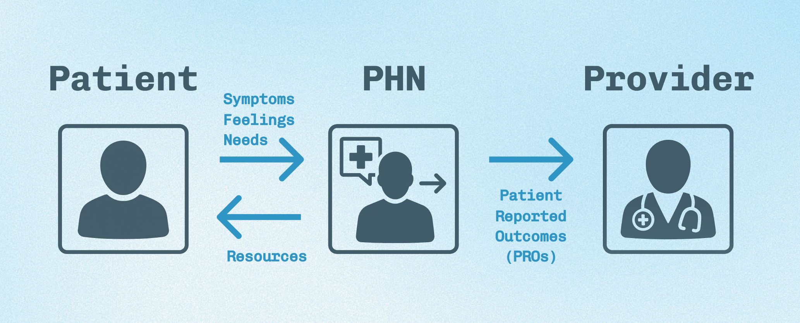
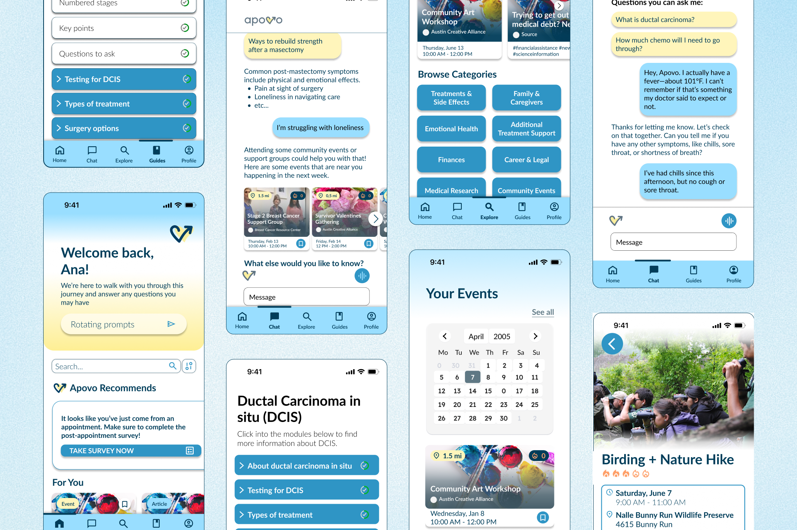

Designing a More Personalized Cancer Care Journey

overview
Apovo is a digital health app that helps cancer patients navigate life outside of the hospital by connecting them with personalized resources and support throughout their care journey.
Apovo helps patients find resources that fit their individual needs, whether that's nutrition support, fitness classes, or group therapy. The app also uses an AI-powered chatbot that answers questions using credible medical sources and helps care teams identify when patients might need additional support.
the problem
Getting diagnosed with cancer is overwhelming, and a lot of the hardest parts happen outside the hospital. Patients are suddenly faced with an unfamiliar world of medical information, uncertainty, and emotional stress, often without knowing where to turn for answers. As one patient put it:
“I was completely unprepared for the actual experience…they tell you not to research online, just wait for your oncologist. But in the meantime, I had so many questions and was terrified I was going to die.”

Meanwhile, healthcare providers don't always have the time or resources to address every patient's unique needs. Some patients need help finding practical resources, while others need more emotional support. Apovo aims to bridge that gap by connecting patients with credible information and personalized resources that meet them where they are in their care journey.

what do I do?
As a Lead Designer, I oversee design decisions and work closely with another designer, developers, and the founder to bring Apovo's vision to life. I've led and facilitated user research, including interviews with 20+ patients, card sorts, usability testing, and focus groups. I use these findings to inform design decisions, iterate on app flows, and prototype new features in Figma. I've also contributed to Apovo's branding and created demo videos and pitch materials. Along the way, our team has presented at SXSW and won multiple pitch competitions!

takeaways
Working on Apovo has helped me grow a lot as a healthcare designer. I've become more comfortable navigating ambiguity and designing around sensitive topics, while learning how to translate research findings into meaningful product decisions. One of my biggest takeaways has been learning to balance patient needs, clinical accuracy, and technical feasibility while keeping empathy at the center of the design process.